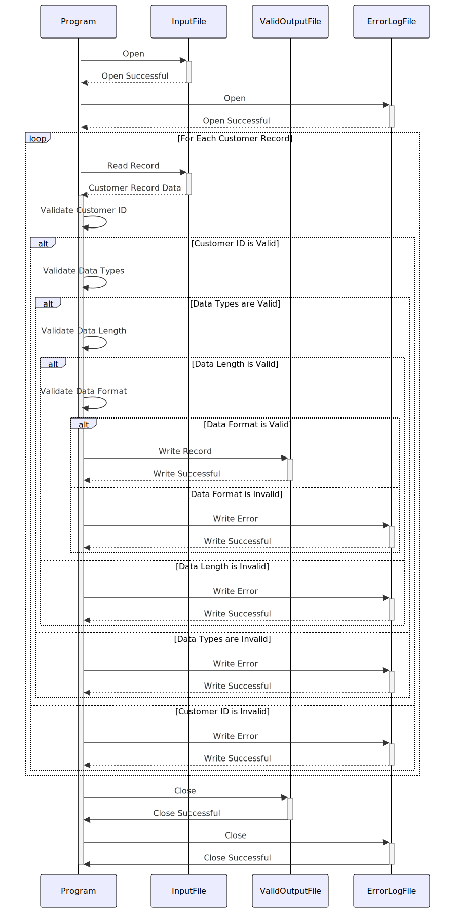

Gerado em: 1º de outubro de 2024
Título do Documento: Programa de Validação e Processamento de Dados do Cliente
Descrição Resumida:
Este programa valida registros de clientes de um arquivo de texto (custdata.txt) em relação a regras de negócios predefinidas. Os registros válidos são gravados em um arquivo de saída, enquanto os registros inválidos são registrados para revisão. Isso garante que apenas dados precisos e consistentes do cliente sejam usados para análise e outras operações comerciais.
Histórias de Usuário:
Como analista de dados, preciso garantir que apenas registros válidos de clientes sejam usados em minha análise para manter a integridade dos dados e gerar insights confiáveis.
Épico Relacionado:
8 - Gestão de Dados do Cliente
Requisitos Funcionais:
- Ler Dados do Cliente: O programa deve ler os registros do cliente do arquivo
custdata.txt. Cada linha no arquivo representa um único registro de cliente, com campos separados por espaços.
- Validar ID do Cliente:
- Cada ID de cliente deve ser exclusivo.
- O programa deve registrar um erro se um ID de cliente duplicado for encontrado.
- Validar Tipos de Dados:
- O ID do cliente deve ser numérico.
- Os nomes (primeiro, do meio, último) devem ser alfabéticos.
- Os números de telefone devem ser numéricos.
- Os números de cartão de crédito devem ser numéricos.
- As datas (data de validade do cartão de crédito) devem seguir um formato específico (por exemplo, AAAA-MM-DD).
- O programa deve registrar um erro se uma incompatibilidade de tipo de dados for detectada.
- Validar o Comprimento dos Dados:
- Cada campo deve ter um limite máximo de comprimento.
- O programa deve registrar um erro se um campo exceder seu comprimento máximo.
- Validar Formato de Dados:
- Os números de telefone devem seguir um formato específico (por exemplo, (XXX) XXX-XXXX).
- Os números de cartão de crédito devem seguir um formato específico (por exemplo, 16 dígitos).
- As datas devem seguir um formato específico.
- O programa deve registrar um erro se uma incompatibilidade no formato dos dados for detectada.
- Lidar com Registros Inválidos:
- O programa não deve gravar registros inválidos no arquivo de saída.
- Os registros inválidos devem ser registrados em um arquivo de log de erros, incluindo o ID do cliente e o motivo do erro.
- Gravar Registros Válidos:
- Os registros válidos do cliente devem ser gravados em um novo arquivo de saída (por exemplo,
valid_custdata.txt).
- O arquivo de saída deve manter o mesmo formato separado por espaço do arquivo de entrada.
Requisitos Não Funcionais:
- Desempenho:
- O programa deve processar o arquivo de dados do cliente com eficiência, especialmente para arquivos grandes.
- Considere otimizar para velocidade e uso de memória.
- Confiabilidade:
- O programa deve ser confiável e produzir resultados consistentes.
- Implemente tratamento de erros robusto para evitar o término inesperado do programa.
- Manutenibilidade:
- O código do programa deve ser bem estruturado, documentado e fácil de entender para manutenção futura.
- Use nomes de variáveis significativos e comentários.
- Segurança:
- O programa deve lidar com dados confidenciais (informações de cartão de crédito) com segurança.
- Considere criptografar dados confidenciais no arquivo de saída.
- Implemente controles de acesso adequados para restringir o acesso não autorizado ao programa e arquivos de dados.
Critérios de Aceitação:
- O programa lê com sucesso todos os registros de clientes do arquivo de entrada (
custdata.txt).
- O programa valida corretamente cada registro de cliente em relação às regras de negócios definidas.
- Todos os registros válidos do cliente são gravados no arquivo de saída (
valid_custdata.txt) no formato correto.
- Todos os registros inválidos do cliente são registrados em um arquivo de log de erros com mensagens de erro específicas, incluindo o ID do cliente e o motivo da falha de validação.
- O programa é executado sem erros de tempo de execução.
Melhorias de Código:
- Tratamento de Erros: Implemente um mecanismo centralizado de tratamento de erros para capturar e registrar erros com elegância, fornecendo mensagens informativas ao usuário.
- Log: Use uma estrutura de log para criar logs detalhados da execução do programa, incluindo erros de validação, para facilitar a solução de problemas.
- Estruturas de Dados: Use estruturas de dados apropriadas (por exemplo, matrizes, structs) para armazenar e gerenciar dados do cliente com eficiência.
- Modularidade: Divida o programa em funções menores e bem definidas para melhorar a organização e a manutenção do código.
- Configuração: Permita regras de validação configuráveis (por exemplo, comprimentos máximos de campo, formatos de dados) por meio de um arquivo de configuração externo.
Melhorias de Segurança:
- Limpeza de Entrada: Implemente a limpeza de entrada para evitar vulnerabilidades como injeção de SQL ou injeção de comando.
- Criptografia de Dados: Criptografe dados confidenciais (como números de cartão de crédito) em trânsito e em repouso.
- Manuseio Seguro de Arquivos: Garanta práticas seguras de manuseio de arquivos, incluindo permissões de arquivo adequadas e exclusão segura de arquivos temporários.
- Auditoria: Implemente trilhas de auditoria para rastrear o acesso a dados e modificações para fins de segurança e conformidade.
Diagrama Conceitual:

–Made by “Smart Engineering” (by Compass.UOL)–